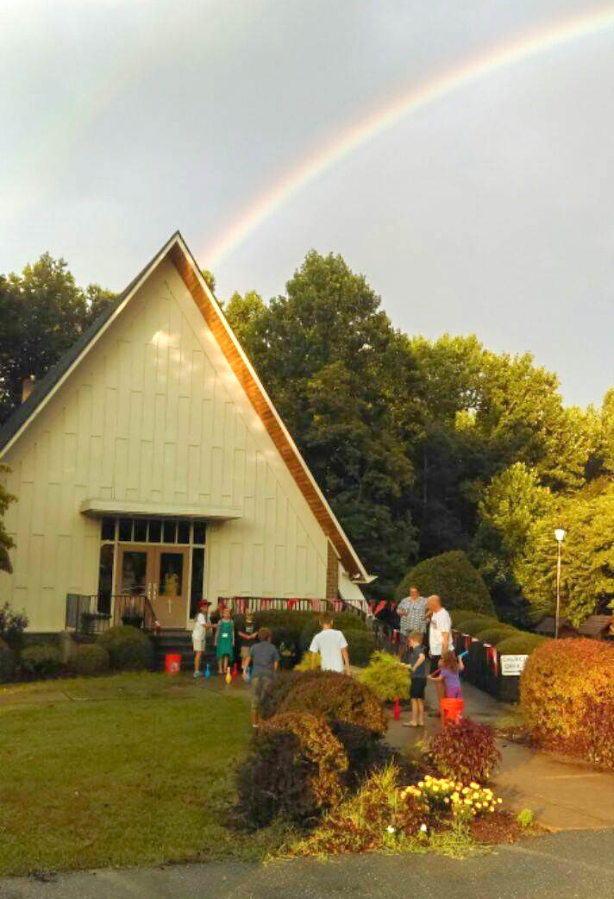

The Divine Service
Our Savior Church is part of a church body called The Lutheran Church—Missouri Synod. We believe, teach, and confess:
- There is one eternal God and Three Persons in the Divine Essence, Father, Son, and Holy Spirit.
- Sin separates us from God and condemns us to eternal death.
- God sent His Son Jesus Christ into the world to save us.
- Jesus Christ’s death on the cross and bodily resurrection from the dead restores our perfect relationship with God.
- Everyone who believes in Jesus and is baptized will have eternal life.
- Eternal life is a free gift of God; we can do nothing to earn it.
- Saving faith in God comes only through the power of the Holy Spirit.
- The Bible is the inspired, inerrant Word of God through which the Holy Spirit creates and sustains the Christian Faith.
We have available a variety of resources to help you learn more about what we believe. We would be pleased to make these resources available to you.